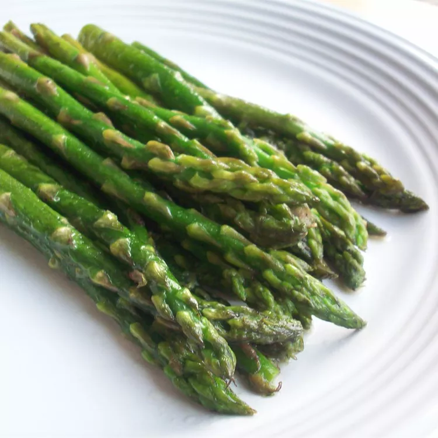

Pan-Fried Asparagus

Description
A delicious Italian-style side dish of aspargus pan-fried in butter with
garlic.
Ingredients
- 1/4 cup butter
- 2 tablesppons olive oil
- 1 teaspoon coarse salt
- 1/4 teaspoon ground black pepper
- 3 cloves garlic, minced
- 1 pound fressh aspargus spears, trimmed
Steps
-
Melt butter in a skillet over medium-high heat. Add olive oil, salt, and
pepper; cook and stir until garlic is fragrant, about 30 seconds.
-
Add asparagus and cook until fork-tender, turning asparagus often to
ensure even cooking, about 10 minutes.